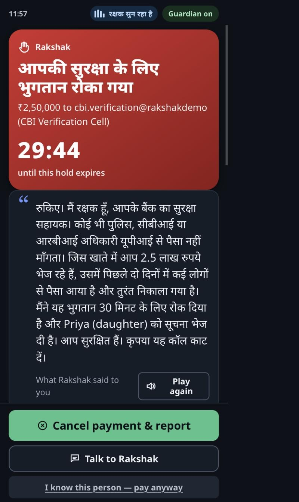

Stop the scam at the moment of payment.
A guardian agent inside the bank app. It hears the coercion on the call, checks who is being paid, and pauses the transfer with a voice in the customer's own language.
Team Rakshak · [add member names, roles, contact]
https://rakshak-223197895518.asia-southeast1.run.app · github.com/devaramanelohith/rakshak-agent
| Defence | Sees | Acts | Misses |
|---|---|---|---|
| Pixel scam detection (on device) | Speech patterns | Warn only | No payee knowledge, no hold, nothing reaches the bank |
| Call-state signals (FICO Scam Signal, BioCatch) | A call is in progress | Risk score at payment | Cannot tell a daughter asking for fees from a fake CBI inspector |
| Bank fraud engines | Payer, payee, amount | Block or step-up | The coerced victim passes every step-up: they want to pay |
| Post-debit SMS, 1930 helpline | The completed debit | Notify, file | Mule accounts empty within hours; ~24% recovery |
| Rakshak | Call semantics x payee mule risk x profile | Graded hold at authorisation | Voice in the customer's language, trusted-contact alert, case + 1930 referral, one-tap override |
With the customer's opt-in, Rakshak scores the caller's coercion live and, when Pay is tapped, fuses it with the payee's mule risk to pause the transfer.
Live transcript, 8 coercion signals, risk meter and reasons in Hindi, Tamil, Kannada or English.
At risk 0.85 the customer hears "Rakshak: careful". The caller never does.
Decision in under 100 ms. 30-minute hold, voice barge-in over the caller, payee evidence, typed-amount override.
Daughter's phone chimes. Fraud desk gets the case, agent trace and a drafted 1930 referral.

| Model or service | Where | Why |
|---|---|---|
| gemini-3.5-transcribe-live | Live API, one session per speaker | Labelled caller/user turns without diarization |
| gemini-3.5-flash | Coercion rubric, strict JSON schema | 2.4 to 3 s with minimal thinking; clean Devanagari, Kannada, Tamil output |
| gemini-3.5-flash (minimal thinking); gemini-3.8-flash fallback | ADK investigator and decision agents, narrative, Search grounding | Best tool use; latency is off the critical path |
| gemini-3.8-flash-tts | Voice barge-in and whisper, prewarmed per amount | Natural Hindi prosody; 100 ms when cached |
| gemini-3.8-live | Post-hold voice conversation with function calling | Customer asks "why?" and hears the answer |
| Google ADK 2.11 | SequentialAgent, Runner, function tools | Traceable multi-agent decision with a policy floor |
| Cloud Run + Secret Manager + Vertex AI | asia-southeast1, WebSockets, session affinity | One service, no key in the image |
| Firestore, BigQuery, Pub/Sub | Cases, ledger sink and payee SQL, alert fan-out | Switched on by env var; same code path |
| Feature | Source in production | In this prototype |
|---|---|---|
| fan_in_48h, cash_out_ratio_7d, dormant_days, account_age | Bank or PSP ledger, scored by sql/payee_risk.sql on a schedule | Synthetic UPI ledger stream: 12,500+ transactions over 7 days, ~150 new per minute, 64 payees, same formula live |
| fri_level | DoT Financial Risk Indicator feed | Static registry value |
| linked_complaints_1930 | I4C suspect registry via the bank | Static registry value |
| kyc_tier | Bank KYC | Static registry value |
| Pred scam | Pred benign | |
|---|---|---|
| Scam (25) | 25 | 0 |
| Benign (25) | 0 | 25 |
Call-level detection at the 0.70 hold threshold, gemini-3.5-flash rubric
| Tier | Rakshak uses | Leaves the phone | Status |
|---|---|---|---|
| 0: no audio | Call in progress + pay screen + payee risk + profile | Only the payment request | Design; policy runs with call risk 0 |
| 1: on-device transcript | Rolling 60 s transcript on the device; scores sent only when Pay is attempted | Scores + last window, at Pay only | Design; needs an OS or OEM audio channel |
| 2: cloud, lawful channel | Live transcription for in-app calls, telco forks or OS-vendor feeds | Audio stream (not retained), transcript on the case | This prototype |
Banks, UPI and PayNow apps that carry the liability under MAS's Shared Responsibility Framework and RBI's customer-protection rules, and the recovery cost of every missed scam.
Fewer authorised-push-payment losses, an auditable case with a drafted 1930 or ASCom referral per intervention, and a customer who was protected instead of blamed.
Two Live sessions, 10 to 20 flash rubric calls, one cached clip, one ADK run: cents per guarded call at flash-tier prices, versus a ₹2 lakh transfer.
Live: https://rakshak-223197895518.asia-southeast1.run.app
Code: https://github.com/devaramanelohith/rakshak-agent
Team Rakshak · [names and contact]